Reference and local browser captures, 3 November 2026. Animation phase, capture timing, fixed overlays and content fetched by the original can affect pixel differences. These figures are differences, not an accuracy claim.
| Viewport | Mean pixel channel difference / 255 | Pixels differing > 20 | Heading width difference |
|---|---|---|---|
| 375 × 812 | 20.41 | 16.52% | 0px |
| 390 × 844 | 18.68 | 14.97% | 0px |
| 430 × 932 | 15.38 | 12.36% | 0px |
| 768 × 1024 | 7.19 | 5.68% | 0px |
| 1024 × 768 | 8.41 | 6.31% | 0px |
| 1366 × 768 | 6.53 | 5.04% | 0px |
| 1440 × 900 | 7.37 | 5.25% | 0px |
| 1920 × 1080 | 6.3 | 4.54% | 0px |
Reference · Local · Difference
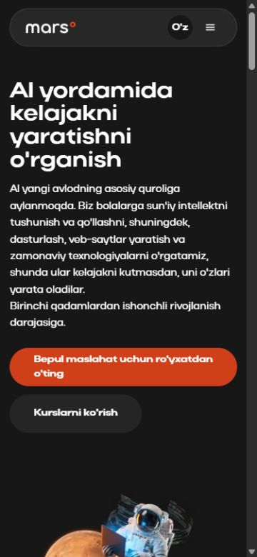
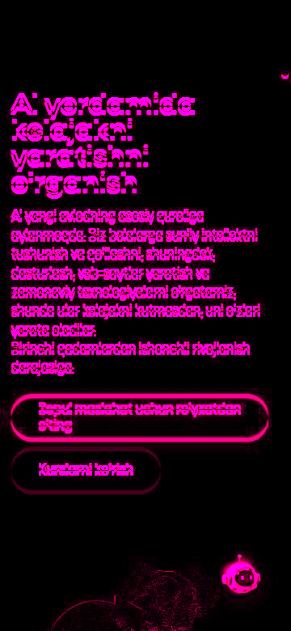
Reference · Local · Difference
Reference · Local · Difference
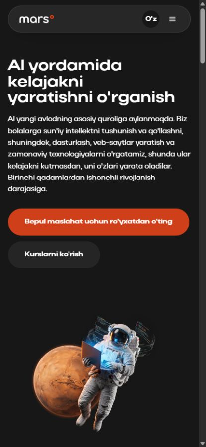
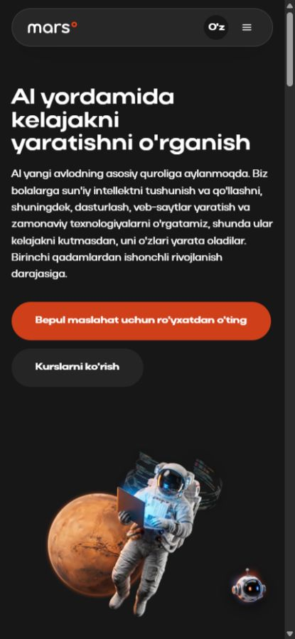
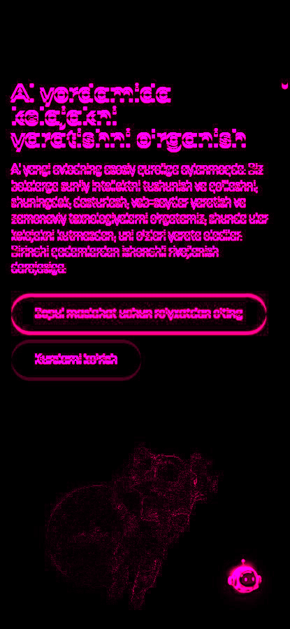
Reference · Local · Difference
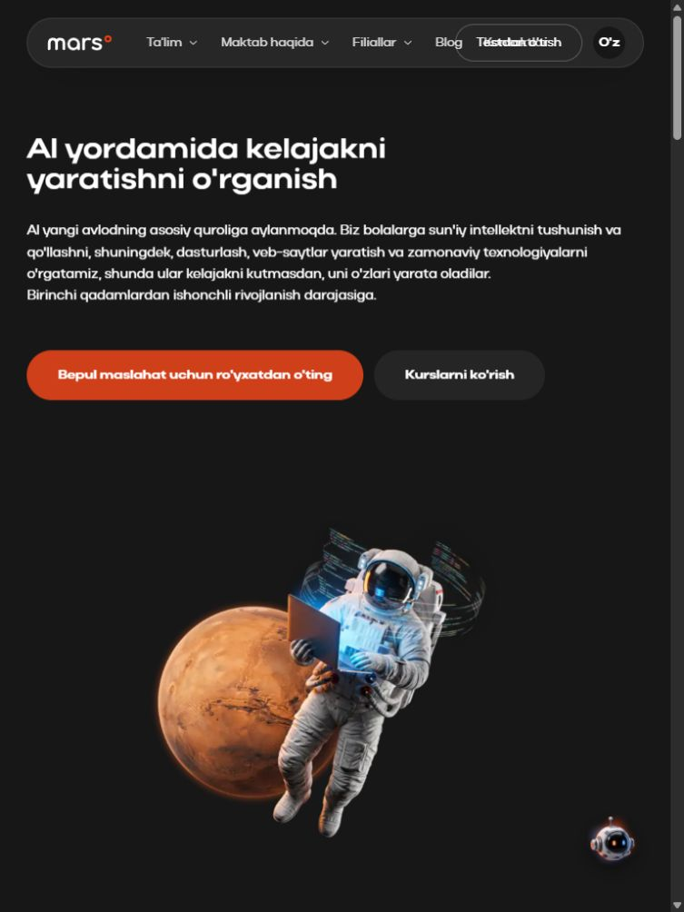
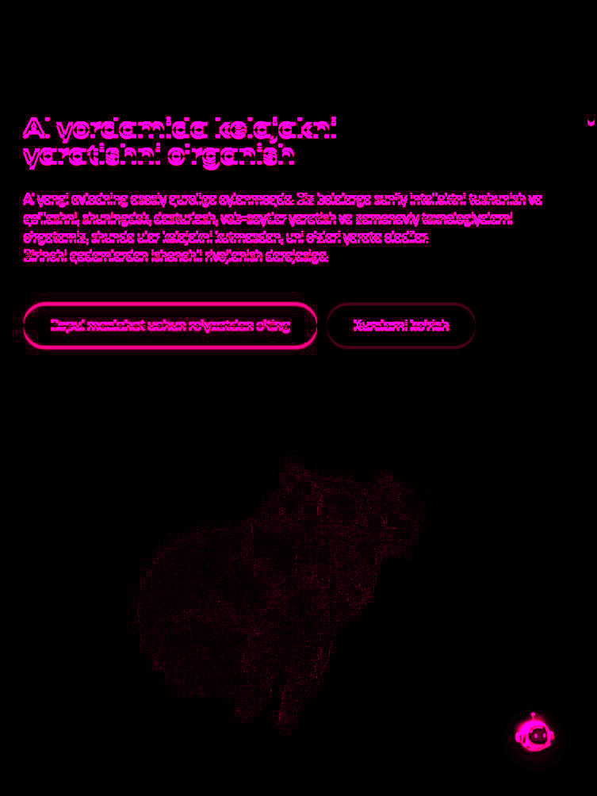
Reference · Local · Difference
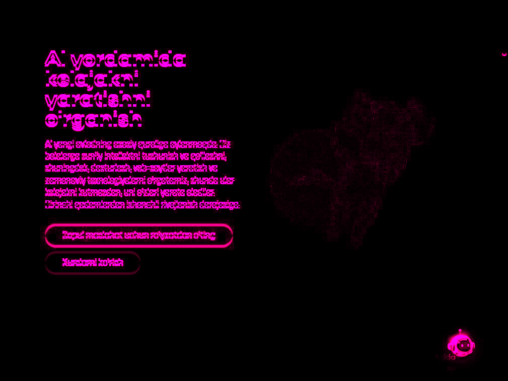
Reference · Local · Difference
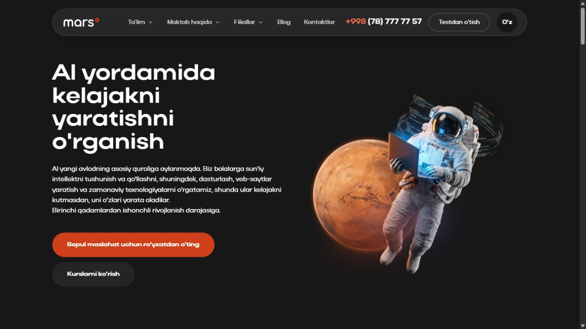
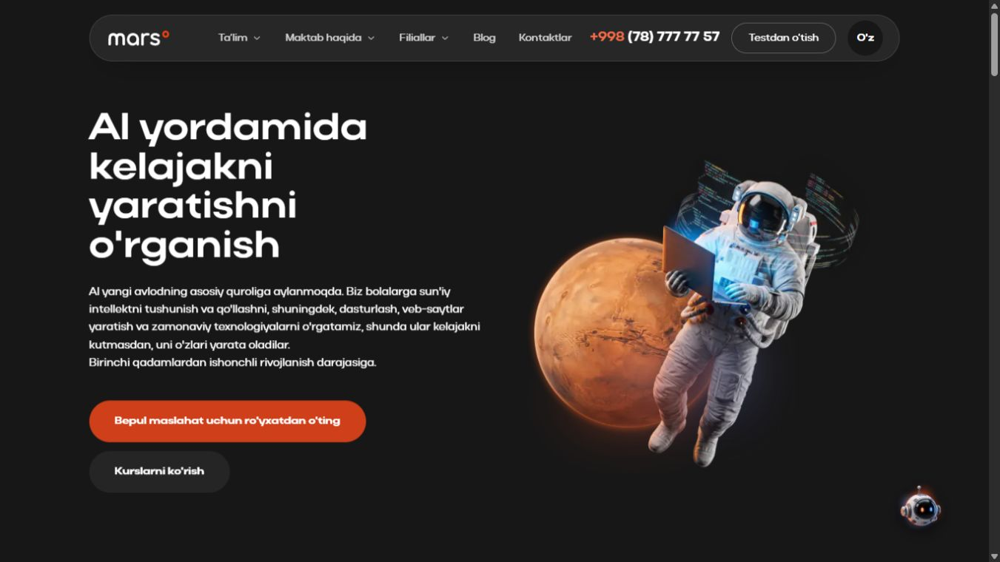
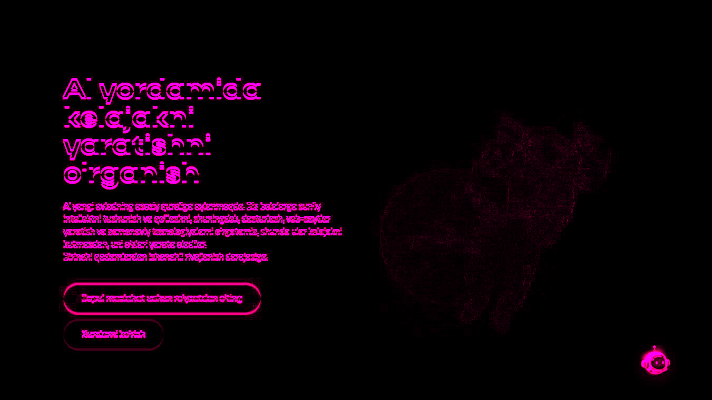
Reference · Local · Difference
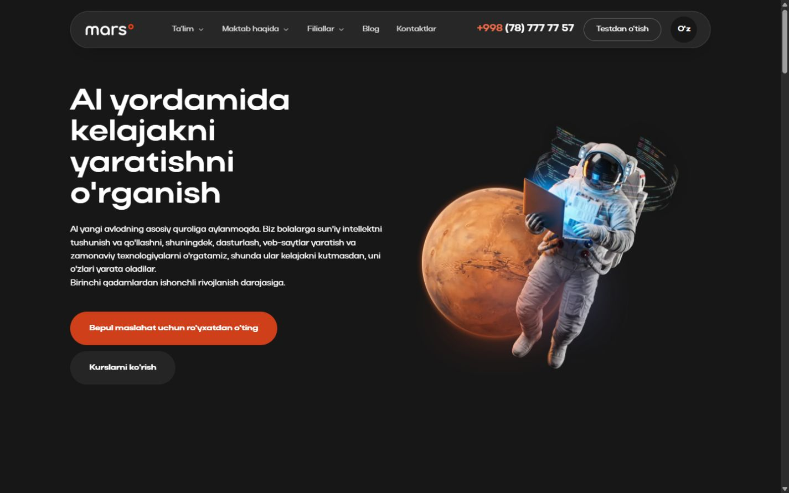
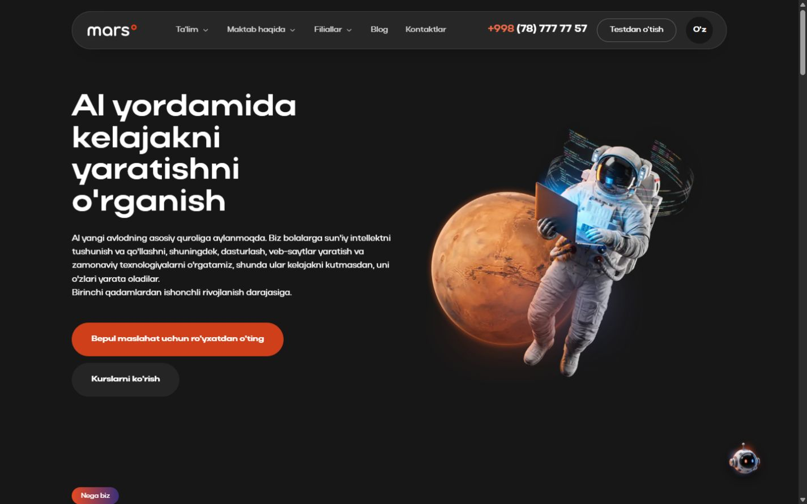
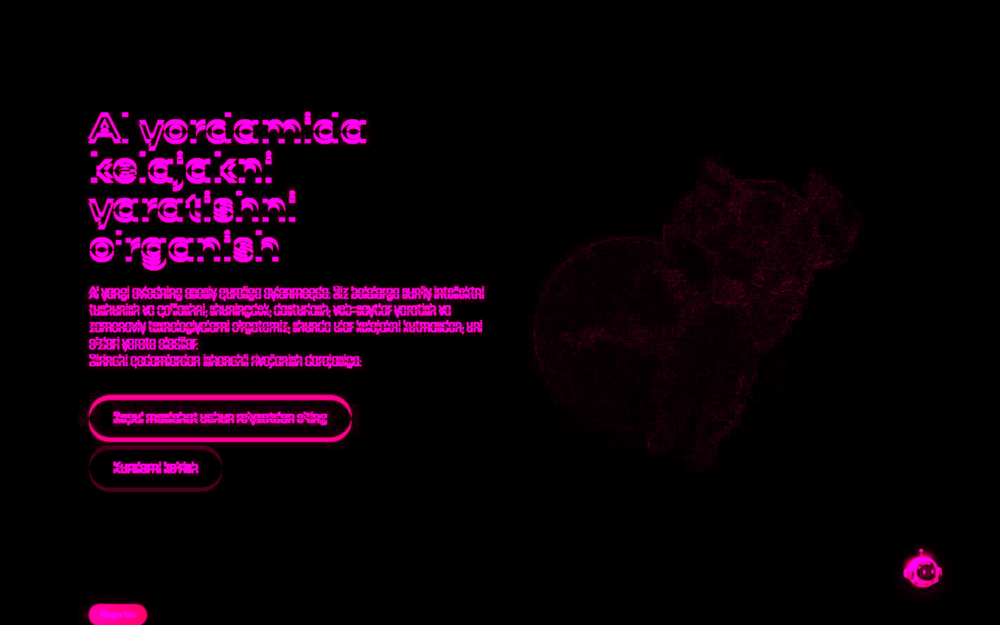
Reference · Local · Difference
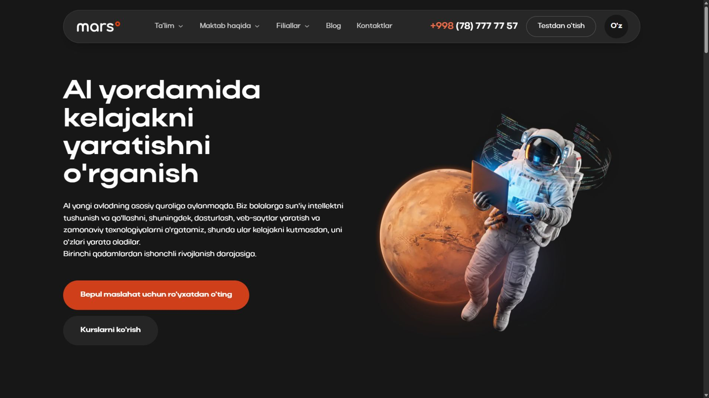
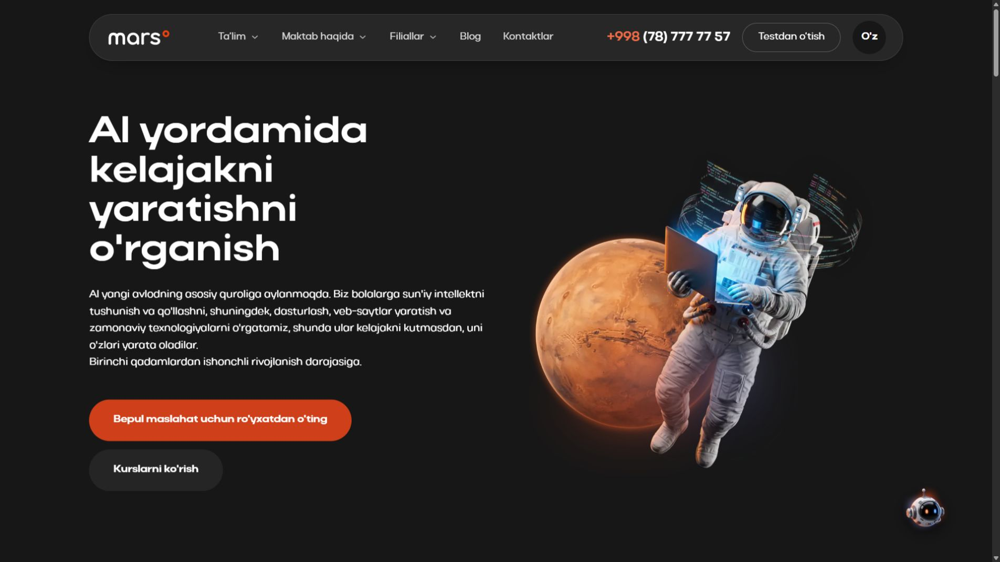
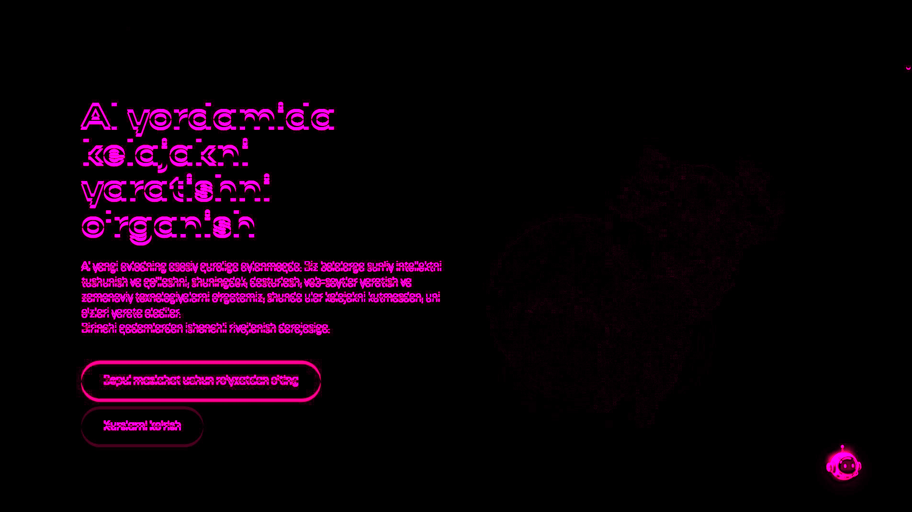